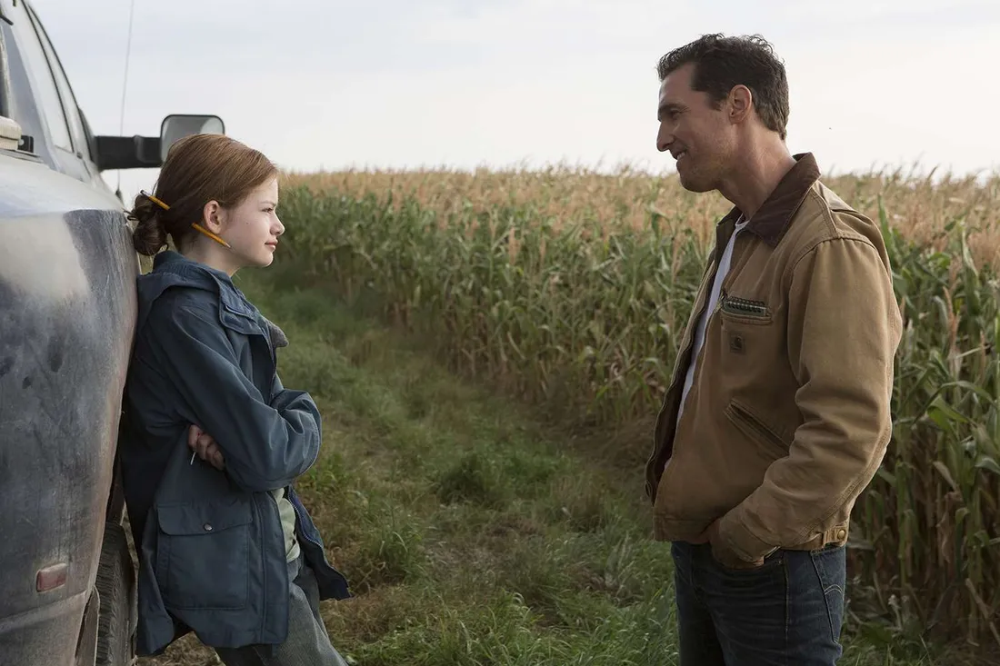

It Was Never About the Wormhole: Interstellar Is a Film About a Father

Most conversations about Interstellar are conversations about the physics: the wormhole near Saturn, time dilation on Miller's planet, whether the fifth-dimensional tesseract is scientifically plausible, whether the ending cheats. These are the terms in which the film has been debated since 2014, which means that a significant portion of its audience has been watching the wrong movie. Interstellar is not a film about space travel. It is about a father who leaves his daughter, and what that decision costs both of them over the course of a lifetime.
The first act establishes this with more care than it is usually given credit for. Cooper is a farmer who used to be a pilot, grounded on a dying Earth, raising two children while quietly suffocating. The farmhouse scenes are not setup. They are the film's emotional foundation. The relationship between Cooper and his daughter Murph is drawn with enough specificity that her anger at being left behind registers as something real and not merely as a plot mechanism. She is not upset because the screenplay requires it but because her father is choosing the future of humanity over being present, and the film never pretends those two things are the same choice.
Murph's perspective is the one that often gets collapsed into the background as the spectacle takes over, but it is as central to the film as Cooper's journey. She spends twenty-three years watching her brother make peace with their father's absence while she refuses to, and her refusal is not irrationality but grief with nowhere to go. The film takes that grief seriously, and Jessica Chastain's performance in the later sections carries the full weight of it. When she finally understands what Cooper was doing and why, the film offers not a simple forgiveness but something closer to acceptance, which is a different thing entirely.
The scene where Cooper watches twenty-three years of video messages is the emotional center of the entire film, not the docking sequence, not the tesseract, not Hans Zimmer's organ. What that scene requires of Matthew McConaughey is a sustained display of grief that has no release valve, because there is nothing to do with it. The people on those recordings have aged, children have grown up, his son has started a family, and his daughter has stopped sending messages altogether. Cooper is watching time move without him, and the cost of what he chose becomes undeniable and irreversible in the space of a few minutes. Nolan shoots it without manipulation, without a swelling score cue to tell the audience how to feel, and just lets it run.
Dylan Thomas's poem "Do Not Go Gentle into That Good Night" appears several times in the film, recited by Michael Caine's Professor Brand. It is usually read as a statement about humanity's refusal to accept extinction, which is how Brand uses it. But the poem is more specifically about a child watching a parent die, urging the parent to fight. In the film's context, it is also about Murph watching her father disappear. The raging against the dying of the light is hers as much as anyone's. The poem carries two readings simultaneously, and the film needs both.
None of this means the science is irrelevant. The time mechanics are what create the film's central tragedy. Without the physics, Cooper's absence does not accumulate the way it does, and the emotional stakes collapse. But the physics is scaffolding. The building it supports is the story of two people separated by a choice that could not be avoided, and what happens to each of them in the space that choice created. The wormhole is the clock. The relationship is the film.
Interstellar earns its ending not because the science resolves cleanly but because the emotional logic does. Cooper finds Murph as an old woman, who tells him to go because she always knew he would. That exchange works because the film spent two and a half hours building toward it. The tesseract and the fifth dimension are remarkable sequences, but they land because of what came before them: a farmhouse in a dying cornfield, where a father said goodbye and a daughter refused to say it back.